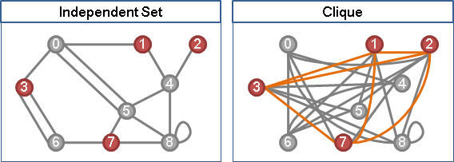
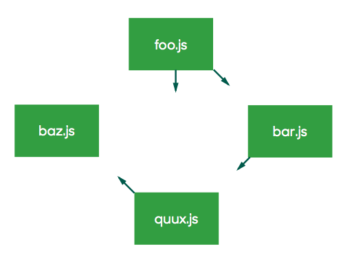
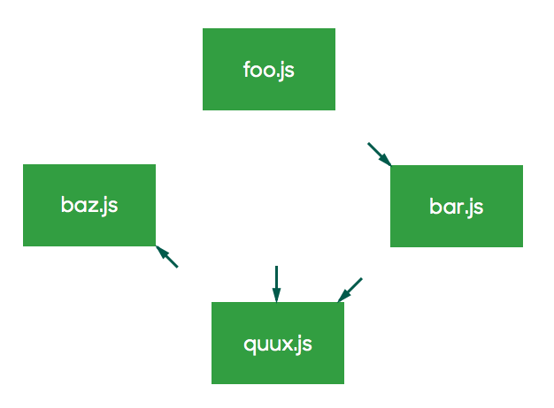
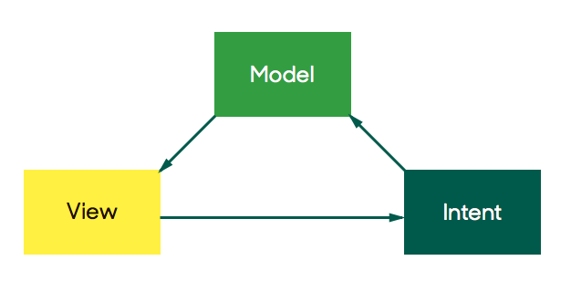
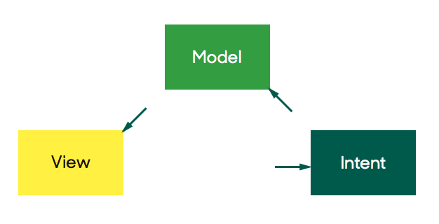

Model-View-Intent
and the Virtual DOM.
Andre Medeiros. October / 2015
Used React for RxMarbles.com
Just the 'View' in MVC.
Not really.React components
- Have state (Model)
- Handle inputs to change state (Controller)
- Render JSX templates (Presentation)
- Contain lifecycle hooks for external purposes
- Are opinionated on where should state live
Don't  ,
,
Stay as you are.
=> Use virtual-dom
Duality
Duality of inter-module communication

X defines which other components does X affect
 InteractiveX defines which other components affect X
 ReactiveHow to implement Reactive components?
- Event bus! No need for RxJS.
- What if event bus X is event bus Y delayed by 1 second?
- Higher-order functions over event buses?
- RxJS! :)
Model-View-Intent
Model-View-Intent
Model
Input:
- Observable of user interaction intents
Output:
- Observable of data/state
View
Input:
- Observable of data/state
Output:
- Observable of VTree
- Observable of raw user inputs
Intent
Input:
- Observable of raw user inputs
Output:
- Observables of interpreted user inputs
(translates what the user is intending to do)
Shou me some codez
What's nice with MVI
- Clear and separated responsibilities
- Less coupling
- Testable
- Easy backend-like rendering logic
- (Apparently) better performance than React
- Declarative
- thisless code
Caveats
- Not everything figured out yet
- Singletons
- Some boilerplate (framework?)
- Views are observable -> observable,
but subviews are val -> val functions.